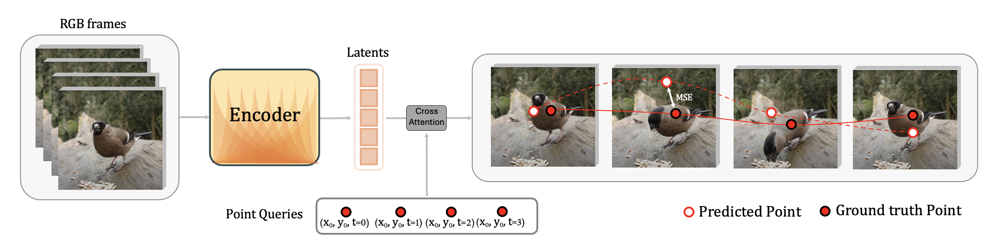

1Predict Gaussian means through time with \(\mu_i^{(t+1)}=\mu_i^{(t)}+\Delta\mu_i^{(t)}\), then project the same primitives at adjacent frames into image coordinates.
2Replace each Gaussian's color with its 2-D displacement \((\Delta x_{i,x}^{(t)}, \Delta x_{i,y}^{(t)}, 0)\) and splat those values with the renderer's opacity weights to obtain dense flow \(F^{(t)}\).
3For each query point, bilinearly sample flow and opacity at \(p^{(t)}\). The pure flow proposal is \(a^{(t)}=p^{(t)}+F^{(t)}(p^{(t)})\).
4Fix a top-k anchor set \(\mathcal{S}\) from frame 0, compute anchor mass \(\omega^{(t)}=\sum_{i\in\mathcal{S}}\alpha_i^{(t)}(p^{(t)})\), and renormalize anchor weights \(\tilde{\pi}_i^{(t)}\).
5Use the anchor proposal \(s^{(t+1)}=\sum_{i\in\mathcal{S}}\tilde{\pi}_i^{(t)}(x_i^{(t)}+\Delta x_i^{(t+1)})\) to preserve identity around occlusion.
6If \(\omega^{(t)}\ge\tau_{\mathrm{vis}}\), update \(p^{(t+1)}=(1-\beta)a^{(t)}+\beta s^{(t+1)}\) and mark visible; otherwise set \(p^{(t+1)}=s^{(t+1)}\) and mark occluded.
k = 8τvis = 0.5β = 0.3

Fine-tuning adds a supervised cross-attention readout over frozen or trainable encoder latents to sharpen localization and occlusion handling.
03 Results map
Coherent across motion and occlusion
Zero-shot tracks emerge directly from Gaussian motion, and light supervision sharpens the readout.
Zero-shot
No labels, no flow, no boxes
Stable tracks emerge directly from Gaussian motion.
Correspondence emerges directly from the moving Gaussians. The tracker below uses no tracking labels.
DAVIS zero-shot: animals, crowds, vehicles, and occlusions.
Kinetics zero-shot: everyday action clips with varied motion.
Failure cases: camera motion and fine detail can stress the Gaussian budget.
05 Comparisons
Video-GMAE vs. GMRW-C
Video-GMAE is more temporally stable in many clips; GMRW-C can better preserve tiny, fast details.
TAP-Vid Kinetics comparison.
TAP-Vid DAVIS comparison.
06 Fine-tuning
Fine-tuned point tracks
Tuning on labeled tracks from Kubric improves tracking further.
Fine-tuned: TAP-Vid DAVIS, two looped sequences.
Fine-tuned: TAP-Vid Kinetics, two looped sequences.
07 Reconstructions
Pretraining renders
Rendered Gaussian trajectories during pretraining capture coarse structure and motion; fine detail is limited by the 256-Gaussian budget.
Dynamic reconstruction from Gaussians.
Dynamic reconstruction from Gaussians.
Dynamic reconstruction from Gaussians.
08 Benchmarks
Zero-shot and fine-tuned results
Reading motion straight off the Gaussians tops prior SSL trackers; Kubric labels lift the readout into supervised tracker range.
AJ ↑ · no labels
Prior SSL
Ours
Δ OA
Kubric
54.2
54.3
+9.3
DAVIS
41.8
41.3
+6.9
Kinetics
46.9
60.1
+8.9
Zero-shot60.1 AJ on Kinetics with no trained tracking readout.
Frozen encoder, Kinetics AJ · supervised readout
MAE-ST42.3
VideoMAE46.9
Video-GMAE65.1
Fine-tuned Reaches 74.0 / 75.1 AJ on Kubric / Kinetics, matching state-of-the-art supervised trackers.
09 Limits
Where it breaks
Static-camera assumptions in pretraining can hurt videos with strong camera motion.
The 256-Gaussian budget limits fine-detail fidelity in busy scenes.
Longer-frame correspondence regularization can degrade learning on very long horizons.
10 Citation
BibTeX
@InProceedings{Baranwal_2026_CVPR,
author = {Baranwal, Tanish and Singh, Himanshu Gaurav and Rajasegaran, Jathushan and Malik, Jitendra},
title = {Tracking by Predicting 3-D Gaussians Over Time},
booktitle = {Proceedings of the IEEE/CVF Conference on Computer Vision and Pattern Recognition (CVPR)},
month = {June},
year = {2026},
pages = {42527-42537}
}